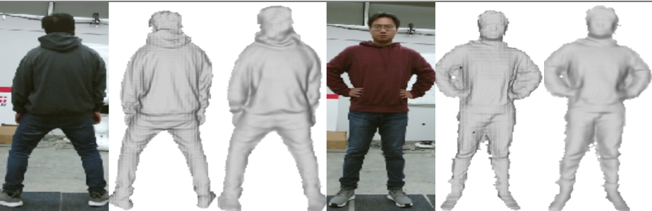

A Neural Network for Detailed Human Depth Estimation from a Single Image
|
Sicong Tang1 *
|
Feitong Tan1 *
|
Kelvin Cheng1
|
Zhaoyang Li1
|
Siyu Zhu2
|
Ping Tan1
|
Simon Fraser University1
Alibaba AI Labs2
|
This paper presents a neural network to estimate a detailed depth map of the foreground human in a single RGB
image. The result captures geometry details such as cloth
wrinkles, which are important in visualization applications.
To achieve this goal, we separate the depth map into a
smooth base shape and a residual detail shape and design
a network with two branches to regress them respectively.
We design a training strategy to ensure both base and detail
shapes can be faithfully learned by the corresponding
network branches. Furthermore, we introduce a novel network
layer to fuse a rough depth map and surface normals
to further improve the final result. Quantitative comparison
with fused ‘ground truth’ captured by real depth cameras
and qualitative examples on unconstrained Internet images
demonstrate the strength of the proposed method.
Paper
|  |
Tang*, Tan*, Cheng*, Li, Zhu, Tan.
A Neural Network for Detailed Human Depth Estimation from a Single Image.
ICCV 2019.(Oral)
[pdf]
[Bibtex]
|
Paper Video